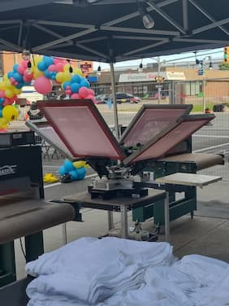

ABOUT THE ISHKODE T-SHIRT FACTORY
ABOUT THE ISHKODE T-SHIRT FACTORY
Keeping the Fire of Creativity Burning
Ishkode is a word in the Anishinaabe language for fire. While we don’t use fire in the traditional sense to make t-shirts or silk screens, we use the word to describe the feeling of creativity.
When we create artwork, we are feeding the fire within us that yearns to create. We are keeping those fires burning while passing knowledge, skills, and traditions on to the next generations. And so, we call ourselves, as artists, Ishkode. The Ishkode T-shirt Factory is 100% owned and operated by Indigenous people!
Our Commitment to the Land
We acknowledge that our business operates on the traditional territory of the Anishinaabe and Haudenosaunee peoples covered under the Robinson-Huron Treaty. We aim to honour this land and maintain a respectful relationship with all Indigenous, Inuit, and Métis peoples of Turtle Island.
Learn, Create & Build Your Business
At the T-Shirt Factory, we invite Indigenous artists and entrepreneurs—from those just beginning to those with established businesses—to apply to join our design and screenprinting workshops.
Artists can bring a ready-made logo or create one from scratch using our design tools. From there, artists are guided through the process of creating a screenprinting design, making their own logoed screen, and learning to screenprint their branding onto custom products.
Print your own designs on:
- T-shirts
- Hoodies
- Tote bags
- Jackets
- Pillowcases
- Canvas
- And more!
Right here in the T-Shirt Factory. All supplies are provided.
Learn a new skill, add new products to your inventory, and explore the income potential of screenprinting.

Indigenous Artists & Business Partnerships
Are you a local business owner, community initiative, or non-profit? We invite you to partner with local Indigenous artists to create meaningful, custom branding for your company merchandise, promotional items, swag, or fundraising projects. Search our list of amazing local Indigenous artists who are ready to help bring your vision to fruition in a positive and meaningful way.
Join Our Artist Roster
There is currently no online application form to join our roster. Right now, we are building our roster by inviting workshop participants who impress our team with their artistic abilities. This allows us to build a close, positive relationship with every artist we work with and promote while creating a strong community of talented Indigenous artists.